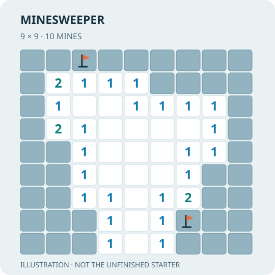

수업 시작 · 총 150분
여러분의 아이디어를 작동하는 도구로
바이브 코딩 워크숍 · Google Antigravity 앱 버전
함께 만들기 120분 + 나만의 앱 30분
시작 설문 · MENTIMETER
참여 동기와 바이브코딩 경험
- 오늘 바이브코딩 세미나에 나오시게 된 이유?
- 저의 바이브코딩 경험 수준은?
menti.com/alt4urxjua9d
휴대폰으로 QR 코드를 스캔하거나 참여 링크를 열어 주세요.
질문 전환은 Mentimeter에서 진행합니다. 표시되지 않으면 프레젠테이션을 새 창에서 열기
오늘 배울 네 가지
오늘 배울 네 가지
1. 바이브 코딩 이해하기
AI와 대화하며 코드를 만드는 방식과 사람의 역할을 이해합니다.
2. 프롬프트 작성하기
목적·맥락·요구사항·제약을 담아 원하는 동작을 명확히 요청합니다.
3. Skills 활용하기
작업에 맞는 Skill을 찾고, 지침을 읽고, 적용 결과를 확인합니다.
4. 나만의 Skill 만들기
반복하는 작업을 절차로 정리하고, SKILL.md로 작성해 직접 적용합니다.
개념 이해 → 요청 작성 → 기존 Skill 활용 → 나만의 Skill 제작
수업 시작 · 총 150분
오늘의 흐름 · 함께 120분 + 내 앱 30분
함께 배우고 만들기
- 0–10분 · 시작 설문과 바이브 코딩
- 10–35분 · 앱·GitHub·프롬프트 예시·첫 실행
- 35–50분 · 프롬프트와 작업 모드
- 50–80분 · 지뢰찾기 함께 만들기
- 80–95분 · Skills 이해와 활용
- 95–110분 · 나만의 SKILL.md
- 110–120분 · 공유·복구 연습
내 아이디어에 적용하기
- 120–145분 · 나만의 작은 앱 제작
- 145–150분 · 짧은 시연과 마무리
0–10분 · 바이브 코딩 이해
이 수업에서 말하는 바이브 코딩
자연어로 의도를 설명하고,
생성된 코드를 실행·검토하며
조금씩 수정해 나가는 개발 방식
- 프롬프트: AI에게 전달하는 작업 지시와 맥락
- 프로토타입: 핵심 기능과 사용 방법을 시험하는 초기 버전
- 검증: 기대한 결과와 실제 결과를 비교하는 작업
0–10분 · 바이브 코딩 이해
사람이 결정할 일과 AI가 도울 일
여러분이 결정할 것
- 해결할 문제와 사용 방법
- 입력할 정보와 원하는 결과
- 성공 조건과 테스트할 상황
- 실제 사용 전에 확인할 점
AI에 맡길 수 있는 작업
- 화면과 코드의 초안 작성
- 구현 방법 제안과 코드 설명
- 오류의 원인과 수정 방법 제안
- 요청한 기능 수정
AI의 설명이 맞는지 직접 실행해 확인합니다.
0–10분 · 바이브 코딩 이해
문제가 불분명하면 결과도 빗나갈 수 있습니다
해결할 문제, 입력할 정보, 원하는 결과가 빠지면 AI가 빈 부분을 추측합니다. 앱이 실행돼도 실제로 필요한 일을 못 할 수 있습니다.
0–10분 · 공통 예제
오늘은 지뢰찾기 하나로 연결합니다
요청
게임 규칙을 말로 정하기
구현
한 기능씩 만들기
검사
직접 실행하고 Skill로 점검하기
공유
확인한 동작과 변경 기록 보여주기
화면과 입력은 시작용 프로젝트에 준비돼 있습니다. 네 가지 게임 규칙을 AI와 함께 완성합니다. 구현과 확인을 한 단계씩 진행합니다.
10–35분 · 준비
준비물 · 앱 하나만 선택하기
- 개인 노트북·충전기·인터넷
- Google Antigravity 앱 설치·로그인
- 로컬 프로젝트 작업 기능을 사용할 수 있는 계정
- GitHub 계정·GitHub Desktop 설치와 로그인
CLI·터미널·VS Code는 필수 준비물이 아닙니다. GitHub에 내 복사본을 만들고 앱에서 그 폴더를 여는 과정부터 함께 시작합니다.
10–35분 · GitHub와 버전 관리
개발 전에 · 돌아갈 지점을 남기기
Git은 변경 이력을 관리하고, GitHub는 그 이력을 온라인에 보관합니다.
저장
현재 파일의 내용을 바꿉니다.
Commit · 커밋
파일의 현재 상태를 설명과 함께 이력에 기록합니다.
Push · 업로드
내 컴퓨터의 커밋을 GitHub에 보냅니다.
수업 내내 반복: 한 기능 구현 → 브라우저 확인 → 변경 비교 → Commit → Push. 다음 기능을 만들기 전에 돌아갈 지점을 남깁니다.
10–35분 · GitHub와 버전 관리
GitHub 준비 · 내 복사본을 내려받기
- GitHub와 GitHub Desktop에 로그인합니다. GitHub Desktop이 없다면 위 공식 사이트에서 다운로드해 설치한 뒤 로그인합니다.
- 수업 저장소에서 Fork → 내 계정 → Create fork를 선택합니다.
- 내 Fork의 Code 메뉴에서 HTTPS 주소를 복사합니다.
- Desktop의 File → Clone Repository → URL에 붙여 넣고, Local Path를 확인한 뒤 Clone합니다.
Fork = GitHub에 만든 내 복사본 / Clone = 내 컴퓨터로 내려받기. 이후 AI 앱과 브라우저는 이 Clone 폴더 안의 파일을 사용합니다.
공식 안내 · Fork·Clone 따라 하기
10–35분 · GitHub와 버전 관리
중간 저장과 되돌리기 · Commit / Revert
기능 하나를 확인했을 때
- Desktop의 Changes에서 바뀐 파일과 내용을 확인합니다.
- Summary에 변경 이유를 쓰고 Commit to main을 누릅니다.
- Push origin으로 내 Fork에도 올립니다.
방금 만든 변경을 취소할 때
- 미커밋 변경이 있으면 먼저 복구 전 임시 저장으로 커밋합니다.
- History에서 취소할 최신 내 커밋을 우클릭 → Revert Changes in Commit.
- 취소 커밋과 파일을 확인하고 브라우저에서 다시 실행한 뒤 Push합니다.
Revert는 선택한 커밋 하나의 변경을 취소하고 이력을 남깁니다. 이번에는 최신 내 커밋만 대상으로 합니다. 충돌하면 진행을 멈추고 강사와 확인합니다.
공식 안내 · Revert로 변경 취소하기
10–35분 · 프롬프트 작성
프롬프트에 무엇을 담을까?
무엇을 전달할까?
- 목적: 누가, 왜 사용하는가
- 맥락: 현재 상태와 이미 구현된 기능
- 요구사항: 입력·동작·결과
- 제약: 수정할 범위와 제외할 기능
무엇을 확인할까?
- 성공 조건: 어떤 결과가 나와야 하는가
- 예외: 빈 입력·범위 밖 값
- 검사: 무엇을 직접 실행할지
- 결과 보고: 수정 내용·테스트 결과·남은 작업
10–35분 · 다른 앱으로 보는 프롬프트 예시
좋은 프롬프트 예시 · 발표 타이머
발표자가 시간을 확인할 수 있는 한 화면 타이머를 만들고 싶습니다. 입력: 사용자가 발표 시간을 분 단위로 입력합니다. 기능: 시작·일시정지·초기화 버튼과 남은 시간을 표시합니다. 성공 조건: 일시정지 중에는 시간이 줄지 않고, 0이 되면 종료를 알립니다. 예외 처리: 빈 값이나 0 이하의 시간은 시작하지 않고 이유를 안내합니다. 제약: 외부 API 없이 브라우저에서 실행되는 HTML 파일 하나로 만듭니다. 먼저 화면 구성과 구현 계획을 설명하고, 확인 후 코드를 작성해 주세요. 구현 뒤에는 제가 직접 따라 할 테스트와 예상 결과를 알려 주세요.
목적 · 입력 · 기능 · 성공 조건 · 예외 · 제약 · 진행 순서를 담았습니다. 이 구성을 참고해 지뢰찾기의 요청문은 직접 작성해 봅니다.
10–35분 · 작업 폴더
Clone한 폴더에서 실습 시작하기
- Desktop의 Repository → Show in Finder / Explorer로 Clone 폴더를 엽니다.
- 그 안의 exercises/minesweeper를 찾습니다.
- index.html, src, tests, AGENTS.md가 보이는지 확인합니다.
ZIP으로 먼저 시작했다면 같은 위치의 수정 파일을 Clone 폴더로 복사하고 AI 앱도 Clone 위치로 다시 엽니다. ZIP 폴더 자체에는 Git 이력이 없으므로 Commit·Revert를 사용할 수 없습니다.
10–35분 · 프로젝트 열기
Antigravity에서 실습 폴더 열기
- Antigravity 앱에서 로컬 폴더를 사용하는 프로젝트/작업공간을 엽니다.
- 선택할 폴더는 ZIP을 푼 곳의 exercises/minesweeper입니다.
- 대화창에서 현재 작업 경로를 확인합니다. Gemini 채팅이나 Gemini CLI 교안과 혼동하지 않습니다.
메뉴 이름은 앱 버전에 따라 다를 수 있습니다. AI가 실제로 수정하는 경로를 확인하고, 브라우저도 그 위치의 index.html을 엽니다.
10–35분 · 첫 요청
첫 요청으로 폴더와 파일 확인하기
AGENTS.md와 docs/PARTICIPANT.md를 읽고 프로젝트를 설명해 주세요. 현재 작업 경로와 아직 구현되지 않은 네 함수 이름을 알려 주세요. 제가 열어 볼 index.html의 실제 위치도 알려 주세요. 아직 파일은 수정하지 마세요.
TODO는 “아직 만들지 않은 부분”이라는 표시입니다. 네 함수 이름을 외우기보다 앱이 올바른 폴더의 파일을 읽었는지 확인하세요.
10–35분 · 브라우저 실행
실제 작업 파일을 브라우저로 열기
- 내 컴퓨터에 Clone한 수업 폴더를 Mac의 Finder 또는 Windows의 파일 탐색기에서 엽니다.
- 그 안에서
exercises폴더를 연 뒤minesweeper폴더를 엽니다. - Chrome, Safari, Edge 등 평소 쓰는 브라우저를 열고,
index.html파일을 브라우저 창으로 끌어다 놓습니다. - 칸 클릭·깃발·다시 시작을 확인합니다.
지금은 지뢰가 없는 미완성 화면입니다. 코드를 수정한 뒤 같은 파일을 새로고침하고 새 게임을 시작합니다. ZIP·원본·복사본을 동시에 열어 혼동하지 않도록 합니다.
10–35분 · 작업 화면 이해
요청·변경·실행을 구분하기
앱 대화
무엇을 만들지 요청하고 계획을 확인합니다.
변경 내용
앱의 Diff 또는 파일 보기에서 바뀐 부분을 읽습니다.
브라우저
새로고침하고 새 게임을 시작해 실제 동작을 확인합니다.
AI가 “완료”라고 답한 것과 내가 실행해 확인한 것은 다릅니다. 파일을 수정한 뒤 결과 화면도 확인하세요.
10–35분 · 문제 해결
앱은 열리는데 실습이 안 될 때
- Antigravity의 로컬 코딩 화면인지 확인
- 계정에서 로컬 파일 수정 기능을 사용할 수 있는지 확인
- AI에게 “현재 작업 폴더와 index.html 위치를 알려 주세요”라고 요청
- 브라우저가 같은 위치의 파일을 열었는지 확인
5분 이상 막히면 오류 메시지와 단계를 기록하고 짝과 합류합니다. 이 수업에서는 터미널 명령이나 권한 해제로 해결하려고 하지 않습니다.
10–35분 · 선택 검사
자동 테스트 도구는 필요할 때만
오늘의 필수 확인은
브라우저에서 직접 해 보는 것입니다.
- AI에게 실행 가능한 검사와 실행할 수 없는 검사를 나눠 보고하도록 요청
- Node.js가 이미 있으면 기존 테스트 실행을 AI에게 요청
- Node.js가 없으면 자동 검사를 미실행으로 표시하고 수동 절차 진행
CLI·npm 명령 입력·Node.js 설치는 필수가 아닙니다. 자동 테스트 설치·실행은 수업 후 참고 안내로 제공합니다.
35분 · 준비 점검
준비 완료 · 네 가지 확인
- Google Antigravity 앱에 로그인했다.
- 내 Fork를 Clone하고 그 안의 실습 폴더를 앱에 연결했다.
- 네 TODO 함수와 미완성 상태를 이해했다.
- 실제 작업 폴더의 index.html에서 보드·입력을 확인했다.
Desktop에서 내 저장소와 main을 확인합니다. 받은 코드의 이력이 첫 기준점입니다. 첫 기능을 확인한 뒤 내 커밋을 추가합니다.
35–50분 · 프롬프트와 공통 예제
함께 만들 게임 · 지뢰찾기

- 목표: 지뢰가 없는 칸을 모두 엽니다.
- 숫자: 주변 8칸에 있는 지뢰 수입니다.
- 깃발: 지뢰가 의심되는 칸에 표시합니다.
- 이번 앱의 조건: 첫 클릭에는 지뢰가 없어야 합니다.
지뢰 배치 → 주변 숫자 → 빈 영역 열기 → 승리 판정을 차례로 만듭니다.
35–50분 · 공통 예제로 요청하기
지뢰찾기 요청을 구체적으로 쓰기
- 막연한 요청
- “지뢰찾기를 잘 만들어 주세요.”
- 바꿀 범위
- 게임 규칙 파일 src/engine.js의 placeMines만 구현합니다.
- 성공 조건
- 지뢰 10개·좌표 중복 없음·첫 클릭 안전·항상 종료
- 제약
- 다른 TODO·함수에 전달하는 값(인수)·기존 테스트를 유지합니다.
35–50분 · 작업 모드
계획 · 수정 · 자동 진행
Plan
수정 전에 무엇을 바꿀지 확인합니다.
Edit
확인한 범위만 수정하도록 요청합니다.
Auto
설정된 권한 안에서 작업을 이어 갑니다.
여기서는 작업 방식을 설명하는 말입니다. 세 앱에 같은 이름의 버튼이 있는 것은 아닙니다. 자동 진행을 쓰기 전에는 파일 수정·명령 실행 권한을 확인합니다.
35–50분 · 도구별 차이
Google Antigravity에서 계획 확인하기
placeMines 구현 계획만 설명해 주세요. 아직 코드나 파일을 수정하지 마세요.
- 계획에 첫 클릭 안전·개수·중복·종료 조건이 있는지 확인합니다.
- 빠진 조건을 보완하고 구현을 요청합니다.
- 앱의 승인·변경 검토 화면을 읽고 결과를 확인합니다.
CLI 단축키나 모드 명령을 외울 필요는 없습니다. 실제 앱의 설정과 요청 범위를 확인하세요.
35–50분 · 함께 프롬프트 작성
첫 요청 · 수정 전에 계획 확인하기
src/engine.js의 placeMines 구현 계획만 설명해 주세요. 첫 클릭 좌표를 제외하고 중복 없이 지뢰 10개를 배치해야 합니다. rng가 같은 값을 반복해도 종료돼야 합니다. 다른 TODO·함수에 전달하는 값(인수)·테스트는 유지합니다. 확인할 검사도 제안하되 아직 파일은 수정하지 마세요.
Plan 모드 또는 “아직 수정하지 마세요”라는 요청으로 시작합니다. 계획에서 빠진 조건을 확인한 뒤 구현을 요청하세요.
50–80분 · 지뢰찾기 함께 만들기
게임 파일을 최소한으로 이해하기
- index.html
- 보드와 버튼 등 화면의 구조
- styles.css
- 색·간격·크기 등 화면 표현
- src/app.js
- 클릭·입력 처리와 화면 갱신
- src/engine.js
- 지뢰 배치·숫자·빈 영역·승리 규칙
오늘 규칙 구현은 engine.js에서 진행합니다. AI에게 버튼 클릭부터 규칙 계산까지 관련 부분만 설명해 달라고 요청하세요.
50–80분 · 구현 순서
구현 순서 · 한 번에 한 규칙
1. 지뢰
placeMines
2. 숫자
countAdjacentMines
3. 빈 영역
expandEmptyArea
4. 승리
hasWon
각 미션마다 요청 → 변경 확인 → 검사 → 새 게임 확인 → Commit → Push를 반복합니다. 진행이 느리면 1–2를 먼저 마치고 3–4는 짝과 함께 이어 갑니다.
50–80분 · 지뢰 배치
미션 1 · 첫 클릭이 안전한 지뢰 배치
앞에서 확인한 계획에 따라 placeMines만 구현해 주세요. 첫 클릭 칸을 제외하고 중복 없이 mineCount개의 지뢰를 배치하세요. 전달된 rng를 사용하고, 같은 값이 반복돼도 배치를 끝내 주세요. 다른 TODO와 테스트는 바꾸지 마세요. 직접 실행한 검사와 아직 확인하지 못한 항목을 구분해 주세요.
rng는 무작위 값을 제공하는 함수입니다. 첫 클릭이 안전한 것과 지뢰가 정확히 10개인 것은 별도 확인이 필요합니다. 자동 검사나 검사 화면 없이 개수까지 확인했다고 쓰지 않습니다.
확인 후 저장 지점 · Desktop에서 변경 비교 → Commit: 첫 클릭을 보호하는 지뢰 배치 → Push
50–80분 · 숫자 계산
미션 2 · 주변 지뢰 숫자 계산하기
countAdjacentMines만 구현해 주세요. 보드 안에 있는 주변 8칸의 지뢰 수를 반환하세요. 자기 자신과 보드 밖 좌표는 제외하고 다른 TODO는 유지하세요. 모서리·가장자리·중앙에서 확인할 결과를 설명해 주세요.
모서리는 최대 3칸, 가장자리는 최대 5칸, 중앙은 최대 8칸을 확인합니다. 미리 정한 작은 보드의 예상값과 실제 숫자를 비교하는 검사를 AI에게 요청합니다.
확인 후 저장 지점 · Desktop에서 변경 비교 → Commit: 주변 지뢰 수 계산 → Push
50–80분 · 빈 영역
미션 3 · 연결된 빈 영역 열기
expandEmptyArea만 구현해 주세요. 시작 칸은 이미 열려 있습니다. 연결된 0인 칸과 경계 숫자를 여세요. 지뢰와 깃발 칸은 열지 말고, 같은 칸을 반복 방문하지 마세요. 끝없이 반복되지 않는 방법을 쓰고, 다른 미션의 동작은 유지하세요.
숫자가 0인 칸을 열었을 때 주변 빈 영역이 열리는지, 깃발 칸이 유지되는지 확인합니다.
확인 후 저장 지점 · Desktop에서 변경 비교 → Commit: 빈 영역 자동 열기 → Push
50–80분 · 승리 판정
미션 4 · 모든 안전한 칸을 열면 승리
hasWon만 구현해 주세요. 지뢰가 없는 모든 칸이 열렸을 때만 true를 반환하세요. 깃발을 모두 썼다는 이유만으로 승리하면 안 됩니다. 안전한 칸 하나가 남은 경우와 모두 열린 경우를 비교해 주세요.
한 판을 직접 플레이합니다. 실행 환경이 있을 때만 전체 자동 검사를 요청하고, 없으면 수동 확인과 미실행 검사를 구분합니다.
확인 후 저장 지점 · Desktop에서 변경 비교 → Commit: 안전한 칸 기준 승리 판정 → Push
50–80분 · 실행 결과 확인
테스트 · 무엇을 어떻게 확인했나요?
구현한 미션의 성공 조건을 하나씩 확인해 주세요. 자동 검사가 가능하면 기본 검사와 해당 미션 검사를 실행하세요. 실행 환경이 없으면 설치하지 말고 미실행으로 표시해 주세요. 제가 브라우저에서 따라 할 절차와 예상 결과를 알려 주세요.
검사 결과를 적고 커밋한 뒤 다음 기능을 시작합니다. 기본 검사 통과는 전체 게임 완성을 뜻하지 않습니다. 아직 구현하지 않은 미션의 실패, 구현한 미션의 오류, 직접 확인하지 못한 결과를 구분합니다.
50–80분 · 수정 요청
안 되면 · 행동과 예상 결과를 함께 전달하기
- 행동
- 보드 왼쪽 위 칸을 열고 새 게임을 시작함
- 기대
- 열린 칸과 깃발이 모두 초기화됨
- 실제
- 어떤 값이 남았는지 구체적으로 설명함
- 요청
- 원인을 설명하고 최소 수정 후 같은 절차로 재검사
오류 메시지가 있으면 그대로 전달합니다. “안 돼요”만 보내기보다 직전에 한 행동을 알려 주세요.
80–95분 · Skills 이해와 활용
Skill: 반복 작업의 절차를 재사용하기
Skill은 에이전트가 읽고 따르는
작업 지침과 자료의 묶음입니다.
프롬프트
이번에 무엇을 할지
Skill
반복할 절차와 결과 형식
도구 / MCP
파일·브라우저 등 실제 기능에 접근
Skill은 새 모델을 학습시키거나 결과를 보증하는 기능이 아닙니다.
출처 · Antigravity Skills
80–95분 · Skills 이해와 활용
Skills 마켓에서 필요한 Skill 찾기
인기 순위는 참고 자료입니다. 설치 전에는 작성자와 지침을 읽고 내 작업에 맞는지 확인하세요.
출처 · Skills 마켓
80–95분 · Skills 이해와 활용
추천 1 · Superpowers
아이디어 구체화부터 계획·구현·검토까지
개발 절차를 묶은 커뮤니티 프로젝트
- 작성자 / 저장소: obra/superpowers
- brainstorming: 요구사항과 의도 정리
- writing-plans: 구현 단계를 나누고 확인 방법 정리
- systematic-debugging: 원인을 추적하는 오류 진단 절차
오늘은 계획 세우기나 오류 찾기 중 한 가지를 살펴봅니다. 전체 개발 절차는 수업 후에 더 익혀 보세요.
출처 · Superpowers
80–95분 · Skills 이해와 활용
추천 2 · 수업에 활용할 인기 Skills
find-skills
vercel-labs/skills · 필요한 Skill 탐색
frontend-design
anthropics/skills · 웹 화면 디자인과 구현
agent-browser
vercel-labs/agent-browser · 브라우저 자동화와 동작 확인
web-design-guidelines
vercel-labs/agent-skills · 웹 UI와 접근성 검토
skills.sh All Time 목록에서 확인한 인기 예시 중 수업 관련 항목을 선정했습니다. 순위는 변동됩니다. 확인: 2026-11-19
출처 · Skills 마켓 · find-skills · frontend-design · agent-browser · Vercel Skills
80–95분 · Superpowers 설치 따라 하기
Superpowers 설치 · Antigravity
앱에서 설치
- Customizations → Marketplace를 엽니다.
- Superpowers가 있으면 저장소가 obra/superpowers인지 확인합니다.
- ＋ / Add로 설치한 뒤 Installed에서 활성화 상태를 확인합니다.
새 대화에서 Superpowers의 brainstorming 사용을 요청합니다. 설치 목록과 실제 읽은 지침을 함께 확인하세요. 이름만 답했다고 설치 성공은 아닙니다.
공식 안내 · 앱 플러그인·수동 설치
80–95분 · Superpowers 활용
Superpowers로 지뢰찾기 개선하기
Superpowers를 사용해 지금 만들고 있는 지뢰찾기를 개선해 주세요. 이번 목표: [추가하거나 고칠 기능을 직접 작성] 1. brainstorming으로 필요한 조건과 성공 기준을 함께 정해 주세요. 2. writing-plans로 작은 작업과 확인 방법을 계획해 주세요. 3. 제가 계획을 확인하면 한 단계씩 구현하고 결과를 보여 주세요. 4. 오류가 나면 systematic-debugging으로 같은 문제를 다시 확인하는 절차와 원인을 확인하세요. 5. verification-before-completion으로 실행 결과와 미확인 항목을 보고하세요. 기존 기능과 테스트를 유지하고, 요청하지 않은 TODO는 완성하지 마세요.
Antigravity에도 Superpowers가 설치되어 있는지 먼저 확인하세요. 공통 자연어 요청 예시이며, 실제 적용한 Skill 이름과 지침을 확인합니다.
원저자 자료 · Superpowers 설치·스킬 안내
95–110분 · 나만의 Skill 시작
반복하는 게임 검사를 나만의 Skill로
매번 하는 확인 절차를 game-check라는 Skill로 정리합니다.
입력
검사할 미션과 성공 조건
절차
관련 파일 확인 → 검사 → 결과 비교
결과
통과·실패·미실행 항목과 다음 조치
직접 할 일: 파일 만들기 → 두 요청으로 적용 → 지침 한 줄 수정 → 같은 요청으로 재검사. 작성한 파일과 검사 결과를 기록합니다.
95–110분 · SKILL.md 위치 · Antigravity
나만의 Skill을 저장할 위치
앱에서 연 실습 폴더 안에
minesweeper/
.agents/
skills/
game-check/
SKILL.mdAntigravity
- 프로젝트 폴더는 minesweeper입니다.
- game-check는 내가 정한 Skill 이름입니다.
- 그 안의 SKILL.md에 용도와 절차를 적습니다.
- 숨김 폴더 만들기가 어려우면 앱에 생성을 요청합니다.
다음 단계: 파일 내용 확인 → 새 대화 → Skill 사용 요청. 일반 채팅에 파일을 첨부하는 과정과는 다릅니다.
공식 안내 · 이 앱의 Skill 저장 위치
95–110분 · Skill 작성
1 · 이름과 사용 시점 정하기
--- name: game-check description: 지뢰찾기 미션을 수정한 뒤 규칙과 테스트 결과를 점검할 때 사용한다. --- # 지뢰찾기 점검
name은 이름, description은 언제 쓸지 알려 주는 설명입니다.
위 내용만 저장하면 절차가 빠집니다. 다음 장의 작업 순서와 결과 형식도 같은 파일에 넣습니다.
공식 안내 · SKILL.md 작성
95–110분 · Skill 작성
2 · 검사 순서와 결과 형식 정하기
1. 검사할 미션과 성공 조건을 확인한다. 2. 관련 코드와 기존 테스트를 읽는다. 3. 가능한 검사만 실행하고 나머지는 미실행으로 표시한다. 4. 브라우저에서 직접 확인할 방법을 제시한다. 5. 검사 항목 | 예상 결과 | 실제 결과 | 판정으로 보고한다. 6. 실패 원인과 최소 수정안을 제안한다.
예제에는 이름·설명·절차가 모두 들어 있습니다. 읽어 본 뒤 내 검사에 필요한 지침 한 줄을 추가합니다.
95–110분 · 저장과 사용
3 · 파일을 만들고 Skill 사용하기
46쪽의 전체 예제 파일을 열어 모두 복사한 뒤, 아래 요청 마지막에 붙여 넣습니다.
현재 프로젝트에 .agents/skills/game-check/SKILL.md를 만들어 주세요. 아래 내용을 저장하고, 게임 코드와 기존 테스트는 수정하지 마세요. [여기에 예제 파일의 전체 내용을 붙여 넣기]
파일 이름·내용 확인 → 같은 프로젝트에서 새 대화 → 사용 요청:
/game-check 미션 1을 점검해 주세요.
Skill 목록에서 game-check를 확인합니다. 보이지 않으면 프로젝트 경로·파일명을 확인하세요.
95–110분 · 실행과 개선
4 · 두 요청으로 확인하고 한 줄 개선하기
- 요청 A · 범위 있음
- /game-check 미션 1을 점검해 주세요. 예상값·실제값·미실행 항목을 구분해 주세요.
- 요청 B · 범위 없음
- /game-check 게임을 검사해 주세요. → 검사할 미션을 먼저 묻나요?
- 한 줄 개선
- “모서리·중앙의 첫 클릭을 확인하는 수동 절차도 제시한다.”를 추가합니다.
- 같은 요청 다시 실행
- 새로 생긴 검사 항목을 비교하고 직접 따라 해 봅니다.
완료 기록: 파일 1개 · 두 요청의 결과 · 수정한 한 줄 · 재검사 결과. 일반 프롬프트로만 시험했다면 실제 Skill 호출과 구분합니다.
110–120분 · 공유
함께 만든 지뢰찾기 공유하기
- 짝에게 게임 화면과 구현한 미션을 보여줍니다.
- 대표 행동 하나와 예상 결과를 설명합니다.
- game-check가 어떤 검사를 했는지 보고서를 보여줍니다.
- 아직 구현하지 못한 규칙이나 확인하지 못한 항목을 말합니다.
완성 여부만 비교하지 않습니다. 어떤 요청으로 무엇을 만들었고 어떻게 확인했는지가 중요합니다.
110–120분 · 기록 확인
마지막에 · 저장 이력과 공유 상태 확인하기
내 컴퓨터 · History
- 미션별 커밋이 남아 있는지 확인합니다.
- 커밋 하나를 눌러 어떤 파일이 바뀌었는지 설명합니다.
- Changes에 남은 변경은 검토하고 Commit합니다.
GitHub · 내 Fork
- Desktop에서 Push origin을 누릅니다.
- Repository → View on GitHub로 엽니다.
- 내 계정의 저장소에서 최신 커밋과 파일을 확인합니다.
저장·커밋·Push를 개발 중에 반복했습니다. 이제 다른 사람에게 어떤 변경을 했는지 설명할 수 있는지 확인합니다.
110–120분 · 되돌리기 실습
복구 연습 · 게임 코드 대신 문장 하나로
- AI에게 요청: “실습 폴더의 README.md 맨 아래에 ‘복구 연습용 문장입니다.’를 한 줄 추가하고 다른 파일은 수정하지 마세요.”
- Desktop에서 README.md만 바뀌었는지 확인하고 복구 연습으로 커밋합니다.
- Changes가 비어 있는지 확인한 뒤 History → 방금 만든 복구 연습 커밋 우클릭 → Revert Changes in Commit.
- 추가 문장이 사라지고 취소 커밋이 생겼는지 확인한 뒤 Push합니다.
연습 전에 기존 작업은 먼저 커밋합니다. Revert는 게임 기능의 커밋이 아닌 방금 만든 연습 커밋에만 적용합니다.
공식 안내 · 커밋 취소 안내
110–120분 · GitHub 대안
ZIP으로 진행했다면 · 웹 공유 대안
- 웹의 내 Fork에서 exercises/minesweeper/src 폴더를 엽니다.
- Add file → Upload files에서 실제 수정한 engine.js를 올립니다.
- 설명을 적고 Commit changes를 선택합니다.
- 파일 내용과 커밋 기록을 확인합니다.
이 대안은 로컬 Commit·Revert를 대신하지 않습니다. 웹 커밋은 원격 저장소에 바로 기록됩니다. 내 컴퓨터 파일은 자동 갱신되지 않습니다. Skill은 숨김 폴더 경로가 필요하므로 처음에는 강사 안내나 Desktop 경로를 이용하세요.
120–150분 · 내 앱 만들기
내 앱 아이디어를 한 문장으로 정하기
누구를 위해?
사용자 한 명을 떠올립니다.
무엇을 할까?
핵심 동작 하나를 고릅니다.
어떻게 확인할까?
행동과 예상 결과를 씁니다.
저는 [사용자]가 [작업]을 할 수 있는 앱을 만들겠습니다. [입력/행동]을 하면 [결과]가 나오면 성공입니다.
메모 앱이나 종이에 적고 짝에게 읽어 주세요. 별도 설문 접속은 필요 없습니다.
120–150분 · 나만의 앱
마지막 30분 · 내 아이디어 하나에 적용하기
120–145분 · 제작
- 0–5분: 사용자·핵심 기능 하나·성공 조건 정하기
- 5–17분: 계획 확인 → 구현 → 브라우저 실행
- 17–25분: 테스트 → 작은 수정 → 저장
145–150분 · 공유
- 대표 입력으로 핵심 기능 시연
- 어떤 프롬프트·Skill을 썼는지 설명
- 확인한 결과와 남은 과제 한 가지 공유
한 화면·핵심 기능 하나가 목표입니다. 30분 안에 모든 기능을 완성하려고 하지 않습니다.
120–145분 · 프로젝트 시작
내 앱은 새 폴더에서 시작하기
- Clone한 저장소 폴더 안에 my-app 폴더를 만듭니다.
- Google Antigravity에서 이 폴더를 새 프로젝트로 열고 새 대화를 시작합니다.
- 현재 경로를 확인하고 사용자·핵심 기능 하나·성공 조건을 전달합니다.
- 생성된 index.html을 브라우저로 열고 확인합니다.
Desktop은 저장소 전체, AI 앱은 my-app 폴더를 엽니다. 핵심 기능을 확인한 뒤 Commit·Push합니다. 지뢰찾기 전용 지침은 복사하지 않습니다.
120–145분 · 내 요청문
내 앱의 첫 프롬프트
대상 사용자: [누구] 해결할 작업: [불편한 일 하나] 핵심 기능: [한 가지] 입력과 출력: [무엇을 넣고 무엇을 보는가] 성공 조건: [어떤 행동에서 어떤 결과가 나오는가] 제약: 한 화면, 외부 API 없이 브라우저 실행 먼저 계획을 제시하고, 확인 후 구현해 주세요.
예: 할 일 추가 도구, 발표 타이머, 무작위 발표 순서 뽑기. 기능보다 먼저 확인할 결과를 정합니다.
145–150분 · 짧은 시연
마무리 · 만든 것과 확인한 것 말하기
저는 ___를 위한 ___를 만들었습니다.
___를 하면 ___가 됩니다.
- 사용한 프롬프트나 Skill 한 가지
- 직접 확인한 테스트와 결과
- 다음에 고치거나 추가할 것 한 가지
코드와 Skill 파일을 저장하고, 가능하면 본인 저장소에도 변경을 기록하세요.
마무리 설문 · MENTIMETER
오늘 세션은 어땠나요?
휴대폰으로 QR 코드를 스캔하거나 링크를 열어 수업 소감을 남겨 주세요.
menti.com/alv3ywjamkkr
공식 자료와 참고 링크
Google Antigravity 앱 · 참고 자료
공식 문서 확인: 2026-11-19. 앱 버전·계정별 화면 차이가 있을 수 있습니다. 코딩 작업 화면에서 실습 폴더를 수정할 수 있는지 먼저 확인하세요.